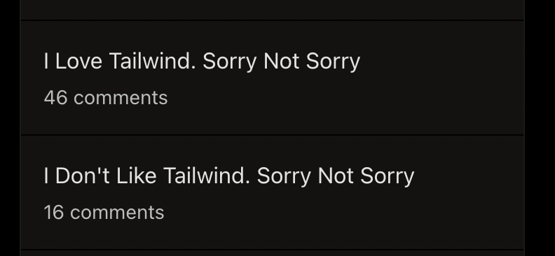
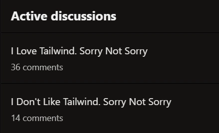

I’m going on a short vacation this week, so this post is coming out a bit earlier than usual. I actually had a different, more “useful” topic in mind — something educational, something responsible. But then I came across this fascinating article: I don’t like Tailwind. Sorry not sorry written by @freshcaffeine , and I couldn’t get it out of my head.
So I decided to write a response instead.
Useful content will have to wait 😄
I actually agree with many of the points in the original article — especially around learning fundamentals. I just have a different perspective shaped by a different kind of work.
Let me start with a small disclaimer: I’ve written a lot — and I mean a lot — of handcrafted CSS in my life. Entire design systems. In fact, I got my first job in IT mostly thanks to my CSS skills, because my programming skills at the time were… let’s say “a work in progress” 😉
There was even a period when I made extra money building simple websites for clients. People literally paid me for delivering clean, aesthetic CSS.
So in theory, I should be the first person to defend handcrafted CSS and criticize Tailwind for polluting HTML.
And yet… I’m not.
Despite all its flaws, I love Tailwind. Deeply, sincerely, and yes — unapologetically.
Because it gives us something incredibly valuable in real-world development: speed and predictability.
Pumpkin pie: homemade or store-bought?
The author of the original article uses a pumpkin pie analogy. Handcrafted CSS is like baking a pie from scratch — roasting the pumpkin, making the dough, carefully preparing everything with love. Tailwind, on the other hand, is like using pre-made ingredients. You open a can, use ready-made crust, assemble everything quickly. Sure, it’s still a pie, but not quite like the one your grandma would make.
It’s a nice analogy. It really is.
The problem is — most businesses are not running artisan bakeries.
They’re running factories.
And those factories aren’t even in the pie business.
In reality, business rarely needs a handcrafted pie. Honestly, it often doesn’t even need a “semi-handmade” one. What it really wants is mass production: something that’s sweet enough, looks good enough, doesn’t cause stomachache, and can be delivered fast. If you can add a small decorative touch on top to make it feel slightly more unique — great. But even that is optional.
And there’s no point being offended by this. We can absolutely build beautiful, handcrafted CSS when we want to. But most of the time, businesses choose speed — because they are selling a product, not CSS.
I’m not building a piece of art.
I’m building software that five teams won’t break next week.
Repetition isn’t always a bug
One of the arguments against Tailwind is that everything starts to look the same. And honestly — that’s true.
But here’s the thing: very often, that’s exactly what the client wants.
Back when I was building websites for clients, the happiest ones were those who got three templates to choose from and a bit of customization on top. They didn’t want a masterpiece. They wanted something clean, modern, and effective — something that sells.
Tailwind is often simply good enough for that.
And in many cases, good enough delivered fast beats perfect delivered late.
“Messy HTML”
Yes — if you just throw classes around randomly, your HTML will look messy.
But let’s be honest: if we’re “craft-oriented developers,” we can organize our components properly, right? In real projects, that long Tailwind class list usually lives inside a component anyway. You don’t copy-paste that everywhere.
Also:
HTML is “noisy”? Sure.
But at least the rules are right next to what they affect.
I’ve seen plenty of “beautiful” CSS codebases where styling logic was scattered across multiple files, overridden in unexpected places, and impossible to trace without jumping through five layers of abstraction. I’ll take explicit over “hidden magic” any day.
Junior developers and “not learning CSS”
I actually agree with one part: Tailwind doesn’t replace learning CSS. I even wrote about that in my article: Is Learning CSS a Waste of Time in 2026?
But the argument that Tailwind is somehow “hurting juniors” always makes me smile a bit.
On one hand, we have mass layoffs in tech and endless discussions about AI replacing developers. On the other, we worry that juniors might not learn CSS because things are… too easy?
Let’s be real for a second.
“Junior” doesn’t mean “child.” These are adults. If someone wants to grow as a frontend developer, learning CSS is part of the job. It’s not some hidden, mystical knowledge. And we don’t need to choose our entire tech stack based on making things harder just so people are forced to learn.
Also — I’ve seen plenty of experienced developers who still struggle with CSS after years in the industry. At that point, I’d honestly rather have them use Tailwind and ship something consistent than fight yet another specificity war.
Tailwind doesn’t create bad developers.
Lack of fundamentals does.
About “craft”
There’s this idea that writing CSS is a form of craftsmanship — something closer to art, something deeply satisfying.
And yes, it can be.
But the last few years — especially with the rise of LLMs — have made it pretty clear where our “craft” actually sits in the bigger picture. In most business applications, CSS is not art. It’s not painting. It’s not sculpture.
It’s closer to baking pumpkin pies at scale.
There will always be places where handcrafted work matters — just like there are bakeries selling beautiful, artisanal cakes. But if you’re selling paper clips and organizing a corporate event, you’re probably not baking everything from scratch. You’re ordering something decent that gets the job done.
And that’s fine.
Why I actually like Tailwind
Let’s be clear — Tailwind is not perfect. It has trade-offs.
But it solves very real problems.
It gives you:
- speed — you don’t context-switch between files every 10 seconds
- predictability — no guessing what some class name means
- consistency — especially across large teams
- simple selectors — which are often easier for browsers to process than deeply nested CSS
- less dead code — thanks to modern build setups
And most importantly:
It removes ambiguity.
The real problem in large codebases isn’t that CSS isn’t “beautiful” enough.
It’s that it becomes inconsistent, fragile, and slow to evolve.
I’ve never seen a project fail because CSS wasn’t handcrafted enough.
I’ve seen plenty fail because things were inconsistent and took forever to build.
When handcrafted CSS still makes sense
I don’t think Tailwind (or something similar) should replace handcrafted CSS everywhere.
There are cases where writing CSS by hand is not just useful — it’s the better choice.
Design systems and shared UI foundations — where you need full control and long-term consistency
Highly custom or experimental UI — where utility classes start to fight you instead of helping
Performance-critical interfaces — where you want precise control over what gets shipped
Learning and understanding the fundamentals — because at some point, abstractions always leak
Final thoughts
Tailwind isn’t about replacing CSS.
It’s about making frontend development survivable at scale.
And no — this post is not sponsored by Tailwind. (But if someone from Tailwind happens to read this… feel free to reach out 😄)
And what do you guys think? Are you Team Tailwind or more into 'craft' CSS? Or maybe something in between?
Thanks for reading! If you enjoyed this post, I'd love to have you follow me here on LinkedIn.

{kind=link}
I'll write another one: " What Is Tailwind? Sorry Not Sorry "

Hahahahaha I’m crying 😂
Do it! And then I’ll follow up with: “What is Google Search? Sorry not sorry” 😄
I'll do YOU one better... WHEN I Love Tailwind. Sorry Not Sorry. ;)
Kudos if you get the reference.
man of culture here, of course I do.
but I'll do YOU one better...
WHY I Love Tailwind. Sorry Not Sorry.
Haha just mark me in the article 😀
I'm totally up for continuing the "Sorry Not Sorry" theme
That's why components aren't reusable under tailwind.
It kind of does, in all but name. People use Tailwind because it's popular. LLMs train on it because it's popular. The people who use it most don't care about semantics. They don't care about accessibility. They don't care about users. It goes around in a circle. If you ask an LLM for something, it loves using Tailwind because it has no idea about the rest of your code and is happy to produce slop.
Of course you can build reusable and configurable components with Tailwind — and it doesn’t require any kind of wizardry 🙂
And yes, LLMs love Tailwind, but it was already hugely popular long before that. There was even that whole discussion about Tailwind creators losing traffic because people stopped going to the docs. Also, if you ask an agent to write plain CSS without supervision, it will happily generate unusable slop as well.
The part about accessibility and semantics feels like a generalization. You can build semantic, accessible UIs with Tailwind — and you can also create a complete mess with plain CSS.
I don't think people generally build reusable components with Tailwind. Or rather, there's a spectrum of Tailwind that goes from inline styles at one end to regular CSS at the other end, and the more reusable a component is, the further from Tailwind's goals it is. Don't forget Tailwind was explicitly written to counter the separation of style and content and the documentation advices you to steer clear of anything else.
A component isn't reusable if it has hard-coded styles - and if you try to separate them out by collecting utility classes into something more semantic then you're going down the CSS end rather than the Tailwind end. If you use Tailwind variables in JS for values then you're reinventing the wheel again, meaning there are now more places to configure things, and that you need to edit code to change the look and feel.
You can build semantic, accessible UIs with Tailwind, people just don't tend to, the same way React components don't tend to be built that way. Almost all the tutorials for either are div soup, and that's what people learn from. Tailwind's massive popularity has had the incidental effect of making the web worse.
And the more you try to make Tailwind into something usable, the closer you get to what you'd have had if you'd used regular CSS in the first place.
There’s a lot of emotion and generalization in this take, and a strong sense of “how things should be.”
I do agree with some parts though. If you’re building highly configurable components, classic CSS can be more convenient. And yes, the more abstraction you introduce, the closer you get to a more traditional CSS approach, which can be the better choice in that context. The point about tutorials is also fair, but that’s not a Tailwind issue, that’s a tutorial issue. React tutorials look exactly the same in that regard 😄
Where I disagree is on reusability. You absolutely can build reusable components with Tailwind. You define components, pass props, and map classes. The whole modern UI approach still applies, including variants and composition. The same goes for the “hardcoded styles” argument, that’s just not how most real-world Tailwind codebases are structured.
Utility classes also aren’t the same as inline styles. You still have CSS underneath, including the cascade, media queries, and everything else that comes with it. And the argument about semantics and accessibility… the web has had issues there long before Tailwind came along. My own application built with Tailwind meets WCAG AA standards, otherwise it wouldn’t have passed the audit and wouldn’t be allowed in production.
And sure, beautifully crafted CSS systems can be great, even better in some cases. If a team has the time and conditions to build that, go for it. But in reality, you often have multiple teams, tight deadlines, and constantly evolving requirements. That’s when things tend to turn into unmaintainable spaghetti, because someone added a random custom class somewhere and nobody knows what it does anymore 🙂
I’m gonna write another article: “I don’t care about Tailwind, sorry not sorry” 😂
lol
I love this comment 😂 You absolutely have to write that article, it would be a banger 😄 On the other hand, maybe you should care! Every time I had to build a frontend with backend devs, they always asked for Tailwind because they didn't understand plain CSS 😂
I used to write a lot of css back in the old days, so I’m pretty familiar with both. Strange right, coming from a back-end dev😄
In that case, you’re a unicorn 😄 Most backend devs I’ve worked with either break something in CSS or just avoid touching it altogether. 😅
To be honest, I don’t feel overwhelmingly excited when writing CSS. But sometimes I just gotta do it, cause I’m a one-man team😄
Well I mean when working on my personal projects.
I’ll let you in on a secret. I don’t feel overwhelmingly excited about writing CSS either… and I’m a frontend developer 😄
I know people who actually enjoy writing markup. We’re definitely not among them. And I’ll never understand why would anyone like it…
Haha, we definitely need people like that in the industry 😄

How cool is that 😁
To be honest - Im just happy i got any engagement in my post!
Hahaha exactly 😄 At this point you don’t even need to write any more hot takes, the pure CSS defenders are doing it for you in the comments. 🤣
I like Tailwind also. My first impression that is create a messy HTML, and make a repetative solution. But after I start to use, I start separated the CSS to two main role:
dev.to/pengeszikra/javascript-grea...
my game is also a good example where the original CSS beat the Tailwind ( 2025 ) the 3D game engine is pure CSS solution.
This is actually a very sensible approach. it nicely bridges my perspective with the original author’s take.
Using Tailwind for layout and responsiveness makes a lot of sense, because that’s exactly where it shines and speeds things up. But when things get more advanced, custom, or just a bit “weird,” I completely agree: pure CSS gives you the level of control you just can’t replace.
So yeah, I’m 100% with you on that split 🙂
What theme are you using in the IDE?
IDE? On the video I show the in game markdown editor with minimal code block syntax highlight.
github.com/Pengeszikra/flogon-gala...
A relevant CSS part:
You’re absolutely right: Tailwind—or any tool, really—doesn’t create bad developers.
If anything, a mediocre developer may ship something cleaner-looking with better tooling, which just makes them slightly harder to spot. But better tools don’t magically turn mediocre developers into great ones.
This debate has existed forever. First it was “if you don’t write machine code, you’re not a real developer,” then assembly, then C, then Java, then “real devs don’t use frameworks”… and the cycle repeats with every language and stack: PHP, JavaScript, Python, React, Tailwind, you name it.
At the end of the day, what matters is solid fundamentals and choosing the right tool for the right job—taking into account real-world constraints like time, budget, maintainability, and team expertise.
And besides: my tailor is rich… because he doesn’t do bespoke unless you pay for it 😉
Thanks, Pascal 😄 Exactly — there’s always someone who’s a “more real” developer than the rest of us 😂
And the tailor analogy is perfect! I probably could’ve written a more balanced post like this… but then would we have had this much discussion? 😄
No, Sylwia, definitely not! Don’t change the way you write—keep bringing us your authenticity. That’s what gives your articles their flavor, and what makes them so engaging! (Well, let’s just say it definitely plays a part 😉)
No worries there — I usually write first, publish, and only then start thinking about it 😄
I don't think it was suppose to be replaced at all. It's just a library like Bootstrap. It's weird for me to think that a "library" will replace a core functionality. Sure, there are cases where that may replace something (which I can't think of anything at the moment), but that's usually rare for a library or framework since it mostly based on preferences of the Developer (Unless you are talking about AI lol). Although it makes it easier for developers, there are some cases where you have to use CSS like you listed for specific cases that Tailwind cannot do.
Yes, it's probably possible to replace CSS with Tailwind if you are a developer who wants to go full Tailwind or Bootstrap mode. For me, I like a good mix of both. Again, it's based on preferences and I don't think it's a big deal in my opinion. Thanks!
Yes, exactly 🙂 As long as it doesn’t turn into a mess where Tailwind is used in one place, plain CSS somewhere else, and no one really knows what goes where. You just need clear rules for when to use what.
And yeah, using Tailwind definitely doesn’t mean giving up CSS 😄
I agree with oft-repeated concern about needing to keep styling close to the rest of the component code. My current structure uses a lot of magical global stylesheets, and I hate it because it's so hard to find where any particular style is coming from, and all that reuse makes it really brittle.
Single file components (I use Vue) resolve that problem 👍 The CSS, HTML and JavaScript all get their own sections in the same file for any one component.
Tailwind is pretty attractive if I only want one or two classes, but a lot of the time it just feels like we've saved ourselves a fairly small number of characters while effectively still using style="attribute1: value1; attribute2: value2; ... attributeN: valueN;".
I want that clutter out of my HTML.
I find scanning a vertical list of attributes much easier than a horizontal one.
I like how CSS lets me write blocks to clearly group styles at different breakpoints.
For me, CSS is cleaner and easier to read than Tailwind, as long as it's scoped (to prevent bleeding into other components) and stored alongside the HMTL it's being applied to.
That’s a really insightful comment, thanks for sharing 🙂
I’m curious though. Do you still see people actually building components like this by hand in commercial projects? I mean outside of hobby work. From my experience, in most real-world projects you end up using some kind of ready-made solution anyway, the question is just which one.
Yup! Across nearly 30 projects in five years, built by different people, this has been the norm in my world.
This approach has generally been coupled with imported component libraries, which do tend to use Tailwind. Alas, the projects have often had a nasty mix of Tailwind, stylesheets and localised CSS.
You know my views on Tailwind 😉
Stylesheets have their place, but in my opinion just for small projects. They can quickly get out of hand, and then the magic of cascading just becomes chaos.
As for component libraries... I think they deserve a seperate response 😃
Out of curiosity… 30 projects in 5 years? I’ve been on the same one for 3 years now 😂 Is that an agency setup?
Yup! Admittedly, one of those was just a three-day assessment of the scale of the challenge before the prospective client went elsewhere, but most were at least half a year and several were multi-year engagements. It was a mix of full time build phases (new projects, or big expansions to existing products), and maintenance contracts for a few days each month per client.
At my peak I think I had eight active clients at the same time. I promise I do not miss that level of context switching 😆
*On Component Libraries*
I have used several over the years, and intend to investigate more in the coming months. My key criteria are: providing the components I need but deem too fiddly to make in-house; those components being accessible; those components being reasonably easy to restyle.
Vuetify is what I am most familiar with, as that's what was used for most of the projects I was assigned to maintain. It's ok, reasonably easy to restyle most but not all things. My main gripe is how long it took them to build some of their components for v3 to be compatible with Vue3. It made them a non-option for a long time for anyone who needed those components, e.g. calendar.
Inkline is not something I would touch willingly, although it has its fans. For me, it was outrageously hard to restyle and far too many components were simply not accessible.
PrimeVue was impressive and very, very flexible. However, the number of ways to customise styles felt absurdly high, and I often ended up resorting to trial and error to find out which method would actually work for any given combination of component and desired restyling. Not smooth, just frustrating.
For a project without complex styling ambitions or a strong visual brand to achieve, I think component libraries are a great way to make a website look decent and modern without too much hassle. They free us to focus on functionality 🙌
For simple components like buttons, though, I think they are overkill if your project has its own bespoke design, as it can be easier to just create your own components around vanilla HTML elements rather than restyle something else.
For complex components, like anything date-related, it could be a fun exercise for a hobby project but I wouldn't dare bill my clients for that amount of effort when off-the-shelf offerings have already tackled all that pain. Give me imports!!!
Where external component libraries are used, I would strongly recommend accessing them via custom components. Wrap the imported component in your own styling, once and only once, then use that. In my experience, it is significatly better than ended up with a mix of high level style sheets and in-place CSS to override the componets' default styles where they do not match the look of your project.
Yeah, I fully agree with this — especially the part about wrapping components.
I’ve worked with more component libraries than I can even count at this point, because clients almost always want something fast and “good enough visually.” And that’s exactly where these libraries shine — but they vary a lot when it comes to customization. Changing something in Angular Material, for example, can be a real pain 😄
@dawn_coder I legit laughed at the PrimeVue part of your comment, they have like a million ways to configure it 😂
It's still probably the best Vue component library I've used during my vue days.. configurable with CSS vars, CSS layers etc
BTW how do you guys like Vue?
What I get from the post and the comments is that most people think writing CSS is starting from scratch every time. When that is your workflow I can understand why you want to use Tailwind.
You don't need to create a whole design system. Start with components that are very common like hero, input, button, navigation, ... After a while you will have a collection to build almost every website. To get started quickly you can use Tailwind, one of its purposes was quick prototyping. But the prototypes ended up in production as it goes with a lot of code.
The main benefit of working that way is that it is build to your (teams) taste. With Tailwind you have to accept their naming.
About the maintenance of the components. When do you really need to change them? When you want to benefit from new CSS features.
About the dead code. Tailwind used a build step to collect all the classes in html files to generate the production css file. It is not that hard to write a script that does the same for your code.
Using "crafty" CSS doesn't mean you can't create tools to make you as productive as with Tailwind.
And by keeping closer to CSS it is easier to change direction. Tailwind is an oil tanker because it is that popular.
This is a great comment, probably the most architectural take in this whole discussion 🙂
In theory, I really like this approach. In practice… I honestly don’t know when I’d use it. Across all the projects I’ve worked on, it was always either a ready-made component library (like Angular Material) or Tailwind (often with shadcn). For context, most of my experience comes from startups.
The closest I’ve seen to a custom component system was our Head of Design in my previous company. He almost convinced leadership that a beautiful, fully custom UI would improve sales… but once they saw the estimates, they told him to go find a ready-made library 😄
And in corporate environments? There wasn’t even a conversation about flexibility. That decision was already made long before any code was written.
I get the hit the ground running aspect from the business side. But the consequence is that with shadcn you are two abstractions away from CSS.
I think the head of design made the mistake to estimate a big bang solution. I think it is better to show the vision and estimate the startup phase. And after that each feature uses X procent of the time to build towards the vision. That way the startup phase looks like the biggest effort.
True in some occasions it are not developers that are making the decisions. It is not always the most enjoyable feeling, but is work. You can find joy in private projects.
When it comes to that designer, honestly, whatever approach he chose back then probably wouldn’t matter today anyway.
It was one of those startups that completely fell in love with AI, and now the main criterion for choosing a stack is basically “what AI is good at.” So… most likely Tailwind 😄
I've built multiple web apps with vanilla CSS. When I switched to Tailwind, I don't like it at first. I don't like having to read multiple class names in my HTML. It somewhat breaks my own personal code. I like HTML and CSS separate.
But over time it grew on me. At first I have to look up equivalent class names from the official Tailwind site. That was the only struggle. It replaced my old struggle of thinking about custom class names following a naming structure like BEM. Once I deployed enough projects, I realized that Tailwind is not as bad as it seems.
However, I totally agree that we should be able to ship projects with vanilla CSS first before using Tailwind. Not only because you will be missing the fundamentals, but also you will not be able to fully appreciate the pros this CSS library brings to the table.
Exactly, and the benefits of Tailwind become even more noticeable in larger teams 🙂
And yes, fundamentals are a must. If anything, they’re becoming even more important in the age of LLMs. I was actually wondering recently how people will learn programming if the “coding” part is increasingly handled by tools. But then a friend of mine, who’s getting into programming, just sat down and started learning C++ from scratch… and it reminded me that this isn’t some kind of secret knowledge after all 😄